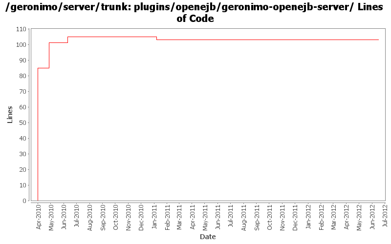

[root]/plugins/openejb/geronimo-openejb-server

| Author | Changes | Lines of Code | Lines per Change |
|---|---|---|---|
| Totals | 8 (100.0%) | 115 (100.0%) | 14.3 |
| djencks | 2 (25.0%) | 88 (76.5%) | 44.0 |
| gawor | 1 (12.5%) | 16 (13.9%) | 16.0 |
| rickmcguire | 4 (50.0%) | 10 (8.7%) | 2.5 |
| xiaming | 1 (12.5%) | 1 (0.9%) | 1.0 |
Update trunk version to 4.0.0-SNAPSHOT
1 lines of code changed in 1 file:
[maven-release-plugin] prepare release 3.0-M2
1 lines of code changed in 1 file:
[maven-release-plugin] prepare branch 3.0-M2
2 lines of code changed in 1 file:
update openejb server pom so release/versions plugins can update
0 lines of code changed in 1 file:
copy legal files from 3.0-M1 release as a base and backport mini-server pom changes
7 lines of code changed in 1 file:
GERONIMO-5290 fix many of the deprecation warnings from maven 3
3 lines of code changed in 1 file:
add license headers
16 lines of code changed in 1 file:
GERONIMO-5220 add mini-servers profile to build component specific mini-servers
85 lines of code changed in 1 file: